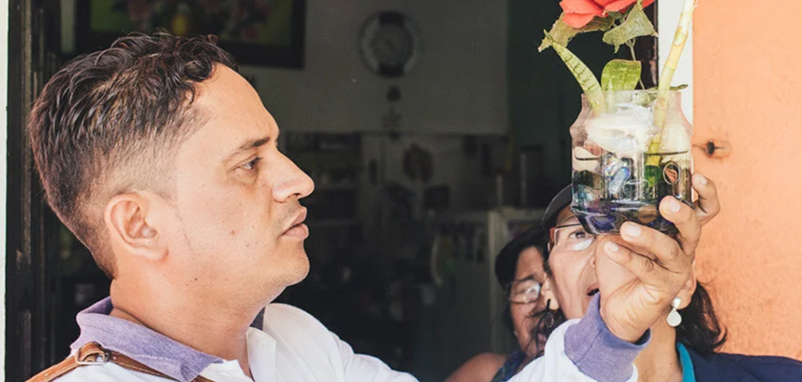
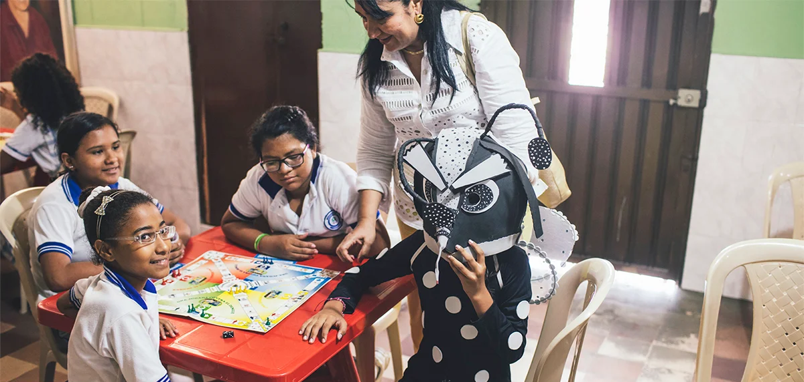
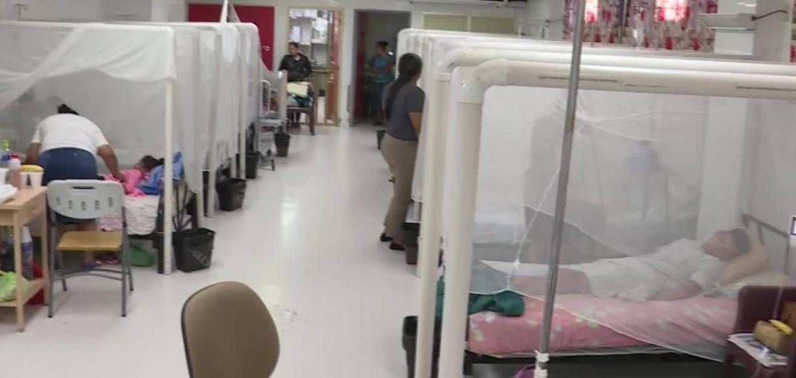
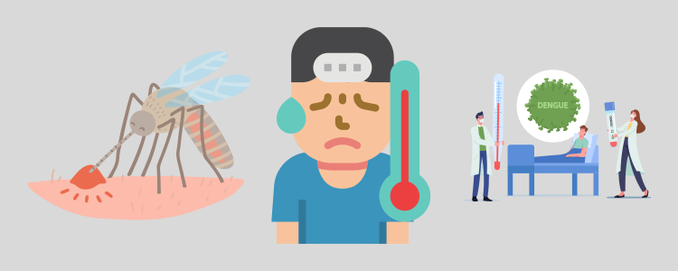

El dengue es una enfermedad transmitida por mosquitos, y ocurre en zonas tropicales y subtropicales del mundo. El dengue leve puede ocasionar fiebre alta y síntomas similares a la gripe. Una forma grave del dengue, también llamada "fiebre hemorrágica del dengue", puede ocasionar sangrado intenso, descenso repentino de la presión arterial (choque) y la muerte.
Millones de casos de infección por dengue ocurren anualmente en todo el mundo. El dengue es más frecuente en el sudeste asiático, las islas del Pacífico occidental, América Latina y África. Pero la enfermedad se ha propagado a nuevas zonas, incluidos los brotes locales en Europa y el sudeste de Estados Unidos.
El dengue tiene un comportamiento estacionario, es decir, en el hemisferio Sur la mayoría de los casos ocurren durante la primera mitad del año, en cambio, en el hemisferio Norte, los casos ocurren mayormente en la segunda mitad. Este patrón de comportamiento corresponde a los meses más cálidos y lluviosos.En las Américas, el vector principal responsable de la trasmisión del dengue es el mosquito Aedes aegypti.
El Aedes aegypti es el vector que presenta el mayor riesgo de transmisión de arbovirus en las Américas y está presente en casi todos los países del hemisferio (excepto Canadá y Chile continental). Es un mosquito doméstico (que vive en y cerca de las casas) que se reproduce en cualquier recipiente artificial o natural que contenga agua.
El mosquito puede completar su ciclo de vida, desde el huevo hasta el adulto, en 7-10 días; los mosquitos adultos generalmente viven de 4 a 6 semanas. La hembra Aedes aegypti es responsable de la transmisión de enfermedades porque necesita sangre humana para el desarrollo de sus óvulos y para su metabolismo. El macho no se alimenta de sangre.
El mosquito es más activo temprano en la mañana y al anochecer, por lo que estos son los períodos de mayor riesgo de picaduras. Sin embargo, las hembras, que necesitan continuar alimentándose, buscarán una fuente de sangre en otros momentos. La hembra Aedes aegypti se alimenta cada 3-4 días; sin embargo, si no pueden extraer suficiente sangre, continúan alimentándose cada momento que pueden.
El Aedes aegypti prefiere poner sus huevos en recipientes artificiales que contengan agua (tambores, barriles y llantas, principalmente) dentro y alrededor de las casas, escuelas y lugares de trabajo. Los huevos de Aedes aegypti pueden resistir las condiciones ambientales secas durante más de un año: de hecho, esta es una de las estrategias más importantes que la especie emplea para sobrevivir y propagarse.
Para eliminar los mosquitos, se recomiendan las siguientes acciones: evitar la recolección de agua en recipientes al aire libre (macetas, botellas u otros recipientes que puedan recolectar agua) para que no se conviertan en lugares de reproducción de mosquitos; cubrir adecuadamente los tanques y depósitos de agua para mantener alejados a los mosquitos; evitar acumular basura, tirar la basura en bolsas de plástico cerradas.
En esta sección de noticias encontraras las últimas noticias acerca del Dengue, tanto nacional como internacionalmente. Dale click en la noticia que más te interese y mantente informado.

Entre 170 y 280 casos de dengue se reportan cada semana, de acuerdo con las estadísticas oficiales de Salud...
Ver noticia completa
Honduras registra al menos 2000 casos de dengue en el territorio nacional en el 2023 informó el coordinador de SESAL...
Ver noticia completa
TEGUCIGALPA, HONDURAS.- El primer mes de 2023 solo certificó la agresividad con la que el dengue sigue actuando...
Ver noticia completa
La Organización Mundial de la Salud (OMS) ha advertido de que el mosquito 'Aedes aegypti', que puede...
Ver noticia completa
De acuerdo al último Boletín Epidemiológico Nacional, se registraron en 16.143 casos y 14 fallecidos. El mosquito está en varios países...
Ver noticia completa
''El cambio climático ha tenido un papel clave al facilitar la propagación de los mosquitos vectores', declaró Raman Velayudhan,...
Ver noticia completa